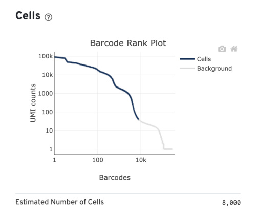

Workflow Overview

Introduction
As discussed at the start of the workshop, single-cell experiments
using 10x Chromium instrument aim to have droplets with one cell plus
one bead. However this is an inherently imperfect process and there are
other important considerations like how healthy or intact the cell was
at the time of measurement.
In this section, our goal is to use filtering thresholds to remove
“cells” that were poorly measured or either not cells at all or included
more than one cell.
Similar to many other areas of research, there are often gaps between
how single-cell data is presented versus the reality of running an
analysis.
For example, only the final filtering thresholds might be reported in
a paper but our process for choosing those is likely to be more
iterative and include some trial and error.
Quality Control evaluation
What is in our data?
Along with the expression matrices, our Seurat object also holds
“meta” data, which is stored in the meta data slot of our object and can
be used to hold the following information
about a single-cell dataset:
- Sample name
- Batch or sample for each cell
- Summary statistics
- Cell cycle phase for each cell
- Cluster membership for each cell
- Other custom annotations for each cell
# Look at our meta data - edit code here
# Example from Griffith lab tutorial:
scrna[[]];
scrna@meta.data;
str(scrna@meta.data); # Examine structure and contents of meta data
levels(x=scrna); # List the items in the current default cell identity class
length(unique(scrna@meta.data$seurat_clusters)); # How many clusters are there? Note that there will not be any clusters in the meta data until you perform clustering.
unique(scrna@meta.data$Batch); # What batches are included in this data set?
scrna$NewIdentity <- vector_of_annotations; # Assign new cell annotations to a new "identity class" in the meta data
What are nFeature and nCount?
nFeatures and nCounts
For single-cell RNA-seq, nFeatures represents the total
number of genes measured per cell (non-zero rows in expression table),
while nCounts represents the total number of UMIs /
molecules measured per cell (sum of column for that cell in expression
table).
Note: for other single-cell data types, nFeatures would
represent what’s being measured in that experiment. For single-cell
ATAC-seq, nFeatures would represents the total number of
peaks (e.g. accessible areas of DNA) per cell.
Since nFeature and nCount are already
stored within our Seurat object, we can look at these metrics:
head(scrna@meta.data$nFeature_RNA); # Access genes (“Features”) for each cell
head(scrna@meta.data$nCount_RNA); # Access number of UMIs for each cell:
Why do we count total UMIs instead of total reads?
Since a single-cell inherently contains a limited amount of RNA
molecules, a higher amount of PCR amplification is required to generate
the final sequencing library.
Since PCR can skew proportions of initial input materials, specific
sequences are included in the initial capture probes called unique
molecule identifiers (UMIs). As each initial probe has a different UMI
sequence, each RNA captured will be tagged with a different UMI, which
allows those initial RNAs and subsequent PCR duplicates to be identified
and duplicates collapsed as part of the initial processing by
CellRanger.
Percent Mitochondrial
To get a sense of how many cells in each sample might have been
stressed or dead, we will need to manually calculate the percentage of
reads from mitochondrial sequences for each cell and manually add that
to the meta.data slot of our Seurat object.
# add flag to ignore capitalization OR point out difference in species?
geo_so[['percent.mt']] = PercentageFeatureSet(geo_so, pattern = '^mt-')
summary(geo_so$percent.mt)
Note: we wan also generate similar stats
for ribosomal RNA.
However, the % ribosomal counts may not always used for filtering. In
addition for a probe based library, such as the fixed FLEX kit, if there
are no probes targeting ribosomal RNAs then this metric can’t be
generated at all
ribo.genes <- grep(pattern = "^RP[SL][[:digit:]]", x = rownames(x = scrna), value = TRUE); # update to include flag to ignore case
percent.ribo <- Matrix::colSums(x = GetAssayData(object = scrna, slot = 'counts')[ribo.genes, ]) / Matrix::colSums(x = GetAssayData(object = scrna, slot = 'counts'));
scrna[['percent.ribo']] <- percent.ribo;
QC visualizations
Generating visualizations for our QC metrics can be useful for
choosing our thresholds. One option for visualization is a violin plot
and Seurat has built in functions to generate violin plots for a
single-cell data.
VlnPlot(geo_so, features = 'nFeature_RNA')
VlnPlot(geo_so, features = 'nCount_RNA')


For choosing thresholds for each dataset, we generally use a starting
point of 200-500 on low end but also look at our summary plots to
determine if that fits well with the data and usually base any cutoff
for the high end of nCount on the distributions as
well.
We can also plot the percent of mitochondrial counts:
VlnPlot(geo_so, features = 'nCount_RNA')

Thinking back to our goal of filtering to keep the real and healthy
cells, what might be a reasonable threshold for these data?
Generally, many tutorials use a cutoff of 5-10% mitochondrial.
However, for some experiments high mitochondrial reads would be expected
(such as in cases where the condition/treatment or genotype increases
cell death), then a relaxed threshold would be necessary to preserve
biologically relevant cells.
Filtering
Choosing Filtering thresholds
Since this data was downloaded from GEO, we have limited visibility
on how the initial FASTQ files were processed to create the CellRanger
output files uploaded for this dataset.
However, we would generally expect to use the CellRanger outputs with
the _filtered label as our initial input for a single-cell
experiment.
Since we expect to use “filtered” CellRanger outputs, it’s important
to understand what prior filtering was performed by CellRanger and why
would want to filter the data further?
CellRanger tries to draw a line between cells and empty beads (or
equivalent), which we can see in the barcode rank plot from the web
summary. However, we want and have the ability to draw lines between
single, well measured cells and doublets or poorly measured
cells/non-cells.

Before we filter the data, how many cells are we starting with?
# add table or plot for cells per sample
Looking at the total number of cells per sample is helpful to
understand both how the called “cells” compare to what was expected for
the experiment. It also allows us to determine the impact of our
filtering thresholds.
Filtering data
Now that we understand our goals, let’s apply our chosen filtering
thresholds to our data:
geo_so = subset(geo_so, subset = nFeature_RNA > 500 & percent.mt < 25)
Evaluating filtering thresholds
To evaluate our filtering threshold choices, let’s generate plots for
our filtered data:
# consider changing to panel style option, instead of three separate plots?
VlnPlot(geo_so, features = 'nFeature_RNA')
VlnPlot(geo_so, features = 'nCount_RNA')
VlnPlot(geo_so, features = 'percent.mt')
It can also be useful to compare the number of cells per sample
before and after filtering, particularly if our input data had a larger
number of “cells” than expected based on the preparation of the
cells.
Summary
<br> <br>
Next steps: dimensionality reduction using PCA
These materials have been adapted and extended from materials listed
above. These are open access materials distributed under the terms of
the Creative
Commons Attribution license (CC BY 4.0), which permits unrestricted
use, distribution, and reproduction in any medium, provided the original
author and source are credited.
LS0tCnRpdGxlOiAiSW5pdGlhbCBRdWFsaXR5IENvbnRyb2wiCmF1dGhvcjogIlVNIEJpb2luZm9ybWF0aWNzIENvcmUiCmRhdGU6ICJgciBTeXMuRGF0ZSgpYCIKb3V0cHV0OgogICAgICAgIGh0bWxfZG9jdW1lbnQ6CiAgICAgICAgICAgIGluY2x1ZGVzOgogICAgICAgICAgICAgICAgaW5faGVhZGVyOiBoZWFkZXIuaHRtbAogICAgICAgICAgICB0aGVtZTogcGFwZXIKICAgICAgICAgICAgdG9jOiB0cnVlCiAgICAgICAgICAgIHRvY19kZXB0aDogNAogICAgICAgICAgICB0b2NfZmxvYXQ6IHRydWUKICAgICAgICAgICAgbnVtYmVyX3NlY3Rpb25zOiBmYWxzZQogICAgICAgICAgICBmaWdfY2FwdGlvbjogdHJ1ZQogICAgICAgICAgICBtYXJrZG93bjogR0ZNCiAgICAgICAgICAgIGNvZGVfZG93bmxvYWQ6IHRydWUKLS0tCgo8c3R5bGUgdHlwZT0idGV4dC9jc3MiPgpib2R5LCB0ZCB7CiAgIGZvbnQtc2l6ZTogMThweDsKfQpjb2RlLnJ7CiAgZm9udC1zaXplOiAxMnB4Owp9CnByZSB7CiAgZm9udC1zaXplOiAxMnB4Cn0KPC9zdHlsZT4KCmBgYHtyLCBpbmNsdWRlID0gRkFMU0V9CnNvdXJjZSgiLi4vYmluL2NodW5rLW9wdGlvbnMuUiIpCmtuaXRyX2ZpZ19wYXRoKCJYWCIpCmBgYAoKIyBXb3JrZmxvdyBPdmVydmlldyB7LnVubGlzdGVkIC51bm51bWJlcmVkfQoKPGJyLz4KPGltZyBzcmM9ImltYWdlcy93YXlmaW5kZXIvd2F5ZmluZGVyLnBuZyIgYWx0PSJ3YXlmaW5kZXIiIHN0eWxlPSJoZWlnaHQ6IDQwMHB4OyIvPgo8YnIvPgo8YnIvPgoKIyBJbnRyb2R1Y3Rpb24KCkFzIGRpc2N1c3NlZCBhdCB0aGUgc3RhcnQgb2YgdGhlIHdvcmtzaG9wLCBzaW5nbGUtY2VsbCBleHBlcmltZW50cyB1c2luZyAxMHggQ2hyb21pdW0gaW5zdHJ1bWVudCBhaW0gdG8gaGF2ZSBkcm9wbGV0cyB3aXRoIG9uZSBjZWxsIHBsdXMgb25lIGJlYWQuIEhvd2V2ZXIgdGhpcyBpcyBhbiBpbmhlcmVudGx5IGltcGVyZmVjdCBwcm9jZXNzIGFuZCB0aGVyZSBhcmUgb3RoZXIgaW1wb3J0YW50IGNvbnNpZGVyYXRpb25zIGxpa2UgaG93IGhlYWx0aHkgb3IgaW50YWN0IHRoZSBjZWxsIHdhcyBhdCB0aGUgdGltZSBvZiBtZWFzdXJlbWVudC4KCkluIHRoaXMgc2VjdGlvbiwgb3VyIGdvYWwgaXMgdG8gdXNlIGZpbHRlcmluZyB0aHJlc2hvbGRzIHRvIHJlbW92ZSAiY2VsbHMiIHRoYXQgd2VyZSBwb29ybHkgbWVhc3VyZWQgb3IgZWl0aGVyIG5vdCBjZWxscyBhdCBhbGwgb3IgaW5jbHVkZWQgbW9yZSB0aGFuIG9uZSBjZWxsLiAKCjwhLS0gQWRkIHNwZWNpZmljIGdvYWxzIGZvciBzZWN0aW9uIC0tPiAKClNpbWlsYXIgdG8gbWFueSBvdGhlciBhcmVhcyBvZiByZXNlYXJjaCwgdGhlcmUgYXJlIG9mdGVuIGdhcHMgYmV0d2VlbiBob3cgc2luZ2xlLWNlbGwgZGF0YSBpcyBwcmVzZW50ZWQgdmVyc3VzIHRoZSByZWFsaXR5IG9mIHJ1bm5pbmcgYW4gYW5hbHlzaXMuIAoKRm9yIGV4YW1wbGUsIG9ubHkgdGhlIGZpbmFsIGZpbHRlcmluZyB0aHJlc2hvbGRzIG1pZ2h0IGJlIHJlcG9ydGVkIGluIGEgcGFwZXIgYnV0IG91ciBwcm9jZXNzIGZvciBjaG9vc2luZyB0aG9zZSBpcyBsaWtlbHkgdG8gYmUgbW9yZSBpdGVyYXRpdmUgYW5kIGluY2x1ZGUgc29tZSB0cmlhbCBhbmQgZXJyb3IuCgo8IS0tIENoYWxsZW5nZSBmb3IgaW5zdHJ1Y3RvcnM6IEV2ZXJ5IHZpZ25ldHRlIHVzZXMgZGlmZmVyZW50IGZpbHRlcnMsIGhvdyB0byBoYXJtb25pemUvZ2l2ZSBndWlkYW5jZT8gUmVsYXRlZCwgaG93IG11Y2ggdG8gZGlzY3VzcyBhcmJpdHJhcnkgY3V0b2ZmcyBhbmQgY29udGludWVkIG1hdHVyYXRpb24gb2YgZmllbGQ/LS0+IAo8IS0tIEFkZCBsaW5rcyB0byByZWxldmFudCByZXNvdXJjZXMgdGhyb3VnaG91dCAtLT4gCgojIFF1YWxpdHkgQ29udHJvbCBldmFsdWF0aW9uCgo8IS0tIEJlZm9yZSB0aGlzIHNlY3Rpb24gLSBHZXR0aW5nIHN0YXJ0ZWQgKHByb2plY3Qgc2V0dXAgYW5kIHJlYWRpbmcgaW4gZGF0YSkKCjxHZW5lcmFsIGd1aWRhbmNlIC0gbGlrZWx5IHRvIGJlIG1vdmVkIHRvIGVhcmxpZXIgc2VjdGlvbjoKLSBOb3RlIHdpdGggZWFjaCBmdW5jdGlvbiBjYWxsIHdoYXQgZ2V0cyBhZGRlZCB0byB0aGUgU2V1cmF0IG9iamVjdC4KLSBBZGRpbmcgY2hlY2tzIHRvIGVuc3VyZSBvYmplY3QgaXMgdXBkYXRlZCBieSBsZWFybmVycyBzaW5jZSB3YW50IHRvIGF2b2lkIGdlbmVyYXRpbmcgY29waWVkIG9iamVjdHMKLSBOb3RlIHdoYXQgbGF5ZXJzIHNob3VsZCBiZSB1c2VkIGZvciB3aGF0LCBmb3IgZXhhbXBsZSwgY291bnRzIHVzZWQgZm9yIEZlYXR1cmVQbG90cy4gUk5BIHZzIFNDVCBhc3NheS4KCk1haW4gaWRlYTogV2hhdCBtZWFzdXJlcyBhbmQgdmlzdWFsaXphdGlvbnMgd2lsbCBiZSBoZWxwZnVsIGZvciBkZWNpZGluZyB3aGF0IGNlbGxzIHRvIGtlZXA/LS0+CgojIyBXaGF0IGlzIGluIG91ciBkYXRhPwoKQWxvbmcgd2l0aCB0aGUgZXhwcmVzc2lvbiBtYXRyaWNlcywgb3VyIFNldXJhdCBvYmplY3QgYWxzbyBob2xkcyAibWV0YSIgZGF0YSwgd2hpY2ggaXMgc3RvcmVkIGluIHRoZSBtZXRhIGRhdGEgc2xvdCBvZiBvdXIgb2JqZWN0IGFuZCBjYW4gPCEtLW9iamVjdG5hbWVAbWV0YS5kYXRhLS0+IGJlIHVzZWQgdG8gaG9sZCB0aGUgZm9sbG93aW5nIGluZm9ybWF0aW9uIGFib3V0IGEgc2luZ2xlLWNlbGwgZGF0YXNldDoKCi0gU2FtcGxlIG5hbWUKLSBCYXRjaCBvciBzYW1wbGUgZm9yIGVhY2ggY2VsbAotIFN1bW1hcnkgc3RhdGlzdGljcwotIENlbGwgY3ljbGUgcGhhc2UgZm9yIGVhY2ggY2VsbAotIENsdXN0ZXIgbWVtYmVyc2hpcCBmb3IgZWFjaCBjZWxsCi0gT3RoZXIgY3VzdG9tIGFubm90YXRpb25zIGZvciBlYWNoIGNlbGwKCmBgYHtyLCBldmFsID0gRkFMU0V9CiMgTG9vayBhdCBvdXIgbWV0YSBkYXRhIC0gZWRpdCBjb2RlIGhlcmUKCiMgRXhhbXBsZSBmcm9tIEdyaWZmaXRoIGxhYiB0dXRvcmlhbDoKc2NybmFbW11dOwpzY3JuYUBtZXRhLmRhdGE7CnN0cihzY3JuYUBtZXRhLmRhdGEpOyAjIEV4YW1pbmUgc3RydWN0dXJlIGFuZCBjb250ZW50cyBvZiBtZXRhIGRhdGEKbGV2ZWxzKHg9c2NybmEpOyAjIExpc3QgdGhlIGl0ZW1zIGluIHRoZSBjdXJyZW50IGRlZmF1bHQgY2VsbCBpZGVudGl0eSBjbGFzcwpsZW5ndGgodW5pcXVlKHNjcm5hQG1ldGEuZGF0YSRzZXVyYXRfY2x1c3RlcnMpKTsgIyBIb3cgbWFueSBjbHVzdGVycyBhcmUgdGhlcmU/IE5vdGUgdGhhdCB0aGVyZSB3aWxsIG5vdCBiZSBhbnkgY2x1c3RlcnMgaW4gdGhlIG1ldGEgZGF0YSB1bnRpbCB5b3UgcGVyZm9ybSBjbHVzdGVyaW5nLgp1bmlxdWUoc2NybmFAbWV0YS5kYXRhJEJhdGNoKTsgIyBXaGF0IGJhdGNoZXMgYXJlIGluY2x1ZGVkIGluIHRoaXMgZGF0YSBzZXQ/CnNjcm5hJE5ld0lkZW50aXR5IDwtIHZlY3Rvcl9vZl9hbm5vdGF0aW9uczsgIyBBc3NpZ24gbmV3IGNlbGwgYW5ub3RhdGlvbnMgdG8gYSBuZXcgImlkZW50aXR5IGNsYXNzIiBpbiB0aGUgbWV0YSBkYXRhCmBgYAoKV2hhdCBhcmUgYG5GZWF0dXJlYCBhbmQgYG5Db3VudGA/CgojIyMgbkZlYXR1cmVzIGFuZCBuQ291bnRzCgpGb3Igc2luZ2xlLWNlbGwgUk5BLXNlcSwgYG5GZWF0dXJlc2AgcmVwcmVzZW50cyB0aGUgdG90YWwgbnVtYmVyIG9mIGdlbmVzIG1lYXN1cmVkIHBlciBjZWxsIChub24temVybyByb3dzIGluIGV4cHJlc3Npb24gdGFibGUpLCB3aGlsZSBgbkNvdW50c2AgcmVwcmVzZW50cyB0aGUgdG90YWwgbnVtYmVyIG9mIFVNSXMgLyBtb2xlY3VsZXMgbWVhc3VyZWQgcGVyIGNlbGwgKHN1bSBvZiBjb2x1bW4gZm9yIHRoYXQgY2VsbCBpbiBleHByZXNzaW9uIHRhYmxlKS4KCj4gTm90ZTogZm9yIG90aGVyIHNpbmdsZS1jZWxsIGRhdGEgdHlwZXMsIGBuRmVhdHVyZXNgIHdvdWxkIHJlcHJlc2VudCB3aGF0J3MgYmVpbmcgbWVhc3VyZWQgaW4gdGhhdCBleHBlcmltZW50LiBGb3Igc2luZ2xlLWNlbGwgQVRBQy1zZXEsIGBuRmVhdHVyZXNgIHdvdWxkIHJlcHJlc2VudHMgdGhlIHRvdGFsIG51bWJlciBvZiBwZWFrcyAoZS5nLiBhY2Nlc3NpYmxlIGFyZWFzIG9mIEROQSkgcGVyIGNlbGwuCgpTaW5jZSBgbkZlYXR1cmVgIGFuZCBgbkNvdW50YCBhcmUgYWxyZWFkeSBzdG9yZWQgd2l0aGluIG91ciBTZXVyYXQgb2JqZWN0LCB3ZSBjYW4gbG9vayBhdCB0aGVzZSBtZXRyaWNzOgpgYGB7ciwgZXZhbCA9IEZBTFNFfQpoZWFkKHNjcm5hQG1ldGEuZGF0YSRuRmVhdHVyZV9STkEpOyAjIEFjY2VzcyBnZW5lcyAo4oCcRmVhdHVyZXPigJ0pIGZvciBlYWNoIGNlbGwKaGVhZChzY3JuYUBtZXRhLmRhdGEkbkNvdW50X1JOQSk7ICMgQWNjZXNzIG51bWJlciBvZiBVTUlzIGZvciBlYWNoIGNlbGw6CmBgYAoKPCEtLUNvbnNpZGVyIG1vdmluZyB2aW9saW4gcGxvdHMgdG8gdGhpcyBzZWN0aW9uLS0+CgojIyMgV2h5IGRvIHdlIGNvdW50IHRvdGFsIFVNSXMgaW5zdGVhZCBvZiB0b3RhbCByZWFkcz8gCgpTaW5jZSBhIHNpbmdsZS1jZWxsIGluaGVyZW50bHkgY29udGFpbnMgYSBsaW1pdGVkIGFtb3VudCBvZiBSTkEgbW9sZWN1bGVzLCBhIGhpZ2hlciBhbW91bnQgb2YgUENSIGFtcGxpZmljYXRpb24gaXMgcmVxdWlyZWQgdG8gZ2VuZXJhdGUgdGhlIGZpbmFsIHNlcXVlbmNpbmcgbGlicmFyeS4gCgpTaW5jZSBQQ1IgY2FuIHNrZXcgcHJvcG9ydGlvbnMgb2YgaW5pdGlhbCBpbnB1dCBtYXRlcmlhbHMsIHNwZWNpZmljIHNlcXVlbmNlcyBhcmUgaW5jbHVkZWQgaW4gdGhlIGluaXRpYWwgY2FwdHVyZSBwcm9iZXMgY2FsbGVkIHVuaXF1ZSBtb2xlY3VsZSBpZGVudGlmaWVycyAoVU1JcykuIEFzIGVhY2ggaW5pdGlhbCBwcm9iZSBoYXMgYSBkaWZmZXJlbnQgVU1JIHNlcXVlbmNlLCBlYWNoIFJOQSBjYXB0dXJlZCB3aWxsIGJlIHRhZ2dlZCB3aXRoIGEgZGlmZmVyZW50IFVNSSwgd2hpY2ggYWxsb3dzIHRob3NlIGluaXRpYWwgUk5BcyBhbmQgc3Vic2VxdWVudCBQQ1IgZHVwbGljYXRlcyB0byBiZSBpZGVudGlmaWVkIGFuZCBkdXBsaWNhdGVzIGNvbGxhcHNlZCBhcyBwYXJ0IG9mIHRoZSBpbml0aWFsIHByb2Nlc3NpbmcgYnkgQ2VsbFJhbmdlci4gIAoKPCEtLU1hdHQgbWF5IGhhdmUgZGlzY3Vzc2VkIFVNSXMgYXMgcGFydCBvZiBDZWxsUmFuZ2VyIHByb2Nlc3NpbmcgYW5kIExpdi9UcmljaWEgbWF5IHRvdWNoIG9uIGFzIHBhcnQgb2YgbGlicmFyeSBnZW5lcmF0aW9uIGF0IGVuZCBvZiBEYXkgMiAodG9kYXkpLS0+CgojIyMgUGVyY2VudCBNaXRvY2hvbmRyaWFsIAoKVG8gZ2V0IGEgc2Vuc2Ugb2YgaG93IG1hbnkgY2VsbHMgaW4gZWFjaCBzYW1wbGUgbWlnaHQgaGF2ZSBiZWVuIHN0cmVzc2VkIG9yIGRlYWQsIHdlIHdpbGwgbmVlZCB0byBtYW51YWxseSBjYWxjdWxhdGUgdGhlIHBlcmNlbnRhZ2Ugb2YgcmVhZHMgZnJvbSBtaXRvY2hvbmRyaWFsIHNlcXVlbmNlcyBmb3IgZWFjaCBjZWxsIGFuZCBtYW51YWxseSBhZGQgdGhhdCB0byB0aGUgYG1ldGEuZGF0YWAgc2xvdCBvZiBvdXIgU2V1cmF0IG9iamVjdC4KCmBgYHtyLCBldmFsID0gRkFMU0V9CiMgYWRkIGZsYWcgdG8gaWdub3JlIGNhcGl0YWxpemF0aW9uIE9SIHBvaW50IG91dCBkaWZmZXJlbmNlIGluIHNwZWNpZXM/Cmdlb19zb1tbJ3BlcmNlbnQubXQnXV0gPSBQZXJjZW50YWdlRmVhdHVyZVNldChnZW9fc28sIHBhdHRlcm4gPSAnXm10LScpCgpzdW1tYXJ5KGdlb19zbyRwZXJjZW50Lm10KQpgYGAKCj4gTm90ZTogd2Ugd2FuIGFsc28gZ2VuZXJhdGUgc2ltaWxhciBzdGF0cyA8IS0tYWRkIGxpbmsgdG8gY29kZSBvciBhIGRyb3AgZG93biBiZWxvdz8tLT4gZm9yIHJpYm9zb21hbCBSTkEuIEhvd2V2ZXIsIHRoZSAlIHJpYm9zb21hbCBjb3VudHMgbWF5IG5vdCBhbHdheXMgdXNlZCBmb3IgZmlsdGVyaW5nLiBJbiBhZGRpdGlvbiBmb3IgYSBwcm9iZSBiYXNlZCBsaWJyYXJ5LCBzdWNoIGFzIHRoZSBmaXhlZCBGTEVYIGtpdCwgaWYgdGhlcmUgYXJlIG5vIHByb2JlcyB0YXJnZXRpbmcgcmlib3NvbWFsIFJOQXMgdGhlbiB0aGlzIG1ldHJpYyBjYW4ndCBiZSBnZW5lcmF0ZWQgYXQgYWxsCgo8IS0tY29kZSBmb3IgY2FsY3VsYXRpbmcgJSByaWJvIC0gbW92ZSB0byBhIHNlcGFyYXRlIHBhZ2Ugb3IgZHJvcGRvd24gd2l0aGluIHRoaXMgc2VjdGlvbi0tPgoKYGBge3IsIGV2YWwgPSBGQUxTRX0Kcmliby5nZW5lcyA8LSBncmVwKHBhdHRlcm4gPSAiXlJQW1NMXVtbOmRpZ2l0Ol1dIiwgeCA9IHJvd25hbWVzKHggPSBzY3JuYSksIHZhbHVlID0gVFJVRSk7ICMgdXBkYXRlIHRvIGluY2x1ZGUgZmxhZyB0byBpZ25vcmUgY2FzZQpwZXJjZW50LnJpYm8gPC0gTWF0cml4Ojpjb2xTdW1zKHggPSBHZXRBc3NheURhdGEob2JqZWN0ID0gc2NybmEsIHNsb3QgPSAnY291bnRzJylbcmliby5nZW5lcywgXSkgLyBNYXRyaXg6OmNvbFN1bXMoeCA9IEdldEFzc2F5RGF0YShvYmplY3QgPSBzY3JuYSwgc2xvdCA9ICdjb3VudHMnKSk7CnNjcm5hW1sncGVyY2VudC5yaWJvJ11dIDwtIHBlcmNlbnQucmlibzsKYGBgCgoKIyMgUUMgdmlzdWFsaXphdGlvbnMKCkdlbmVyYXRpbmcgdmlzdWFsaXphdGlvbnMgZm9yIG91ciBRQyBtZXRyaWNzIGNhbiBiZSB1c2VmdWwgZm9yIGNob29zaW5nIG91ciB0aHJlc2hvbGRzLiBPbmUgb3B0aW9uIGZvciB2aXN1YWxpemF0aW9uIGlzIGEgdmlvbGluIHBsb3QgYW5kIFNldXJhdCBoYXMgYnVpbHQgaW4gZnVuY3Rpb25zIHRvIGdlbmVyYXRlIHZpb2xpbiBwbG90cyBmb3IgYSBzaW5nbGUtY2VsbCBkYXRhLiAKCjwhLS1Db25zaWRlciBkZW5zaXR5IHBsb3RzIGluc3RlYWQgYW5kIHJlY29tbWVuZCBsb29rIGF0IHRoZSBib3VuZHMgb24gdGhlIGVtcGlyaWNhbCBkaXN0cmlidXRpb24gdGhhdCBjYXB0dXJlcyBYJSBvZiB0aGUgY2VsbHMsIHdoZXJlIHRoYXQncyBhIHJlbGF0aXZlbHkgaGlnaCBudW1iZXItLT4KCmBgYHtyLCBldmFsID0gRkFMU0V9ClZsblBsb3QoZ2VvX3NvLCBmZWF0dXJlcyA9ICduRmVhdHVyZV9STkEnKQpWbG5QbG90KGdlb19zbywgZmVhdHVyZXMgPSAnbkNvdW50X1JOQScpCmBgYAoKIVtdKC4vaW1hZ2VzL2N1cnJpY3VsdW0vcWNfbkZlYXR1cmVfdmlvbGluLnBuZyl7d2lkdGg9NzUlfQoKIVtdKC4vaW1hZ2VzL2N1cnJpY3VsdW0vcWNfbkNvdW50X3Zpb2xpbi5wbmcpe3dpZHRoPTc1JX0KCkZvciBjaG9vc2luZyB0aHJlc2hvbGRzIGZvciBlYWNoIGRhdGFzZXQsIHdlIGdlbmVyYWxseSB1c2UgYSBzdGFydGluZyBwb2ludCBvZiAyMDAtNTAwIG9uIGxvdyBlbmQgYnV0IGFsc28gbG9vayBhdCBvdXIgc3VtbWFyeSBwbG90cyB0byBkZXRlcm1pbmUgaWYgdGhhdCBmaXRzIHdlbGwgd2l0aCB0aGUgZGF0YSBhbmQgdXN1YWxseSBiYXNlIGFueSBjdXRvZmYgZm9yIHRoZSBoaWdoIGVuZCBvZiBgbkNvdW50YCBvbiB0aGUgZGlzdHJpYnV0aW9ucyBhcyB3ZWxsLgoKV2UgY2FuIGFsc28gcGxvdCB0aGUgcGVyY2VudCBvZiBtaXRvY2hvbmRyaWFsIGNvdW50czoKPCEtLWNvbnNpZGVyIGFkZGluZyBoaXN0b2dyYW0gb3IgZGVuc2l0eSBwbG90LS0+CgpgYGB7ciwgZXZhbCA9IEZBTFNFfQpWbG5QbG90KGdlb19zbywgZmVhdHVyZXMgPSAnbkNvdW50X1JOQScpCmBgYAoKIVtdKGltYWdlcy9jdXJyaWN1bHVtL3FjX21pdG9fdmlvbGluLnBuZyl7d2lkdGg9NzUlfQoKVGhpbmtpbmcgYmFjayB0byBvdXIgZ29hbCBvZiBmaWx0ZXJpbmcgdG8ga2VlcCB0aGUgcmVhbCBhbmQgaGVhbHRoeSBjZWxscywgd2hhdCBtaWdodCBiZSBhIHJlYXNvbmFibGUgdGhyZXNob2xkIGZvciB0aGVzZSBkYXRhPyAKCkdlbmVyYWxseSwgbWFueSB0dXRvcmlhbHMgdXNlIGEgY3V0b2ZmIG9mIDUtMTAlIG1pdG9jaG9uZHJpYWwuIEhvd2V2ZXIsIGZvciBzb21lIGV4cGVyaW1lbnRzIGhpZ2ggbWl0b2Nob25kcmlhbCByZWFkcyB3b3VsZCBiZSBleHBlY3RlZCAoc3VjaCBhcyBpbiBjYXNlcyB3aGVyZSB0aGUgY29uZGl0aW9uL3RyZWF0bWVudCBvciBnZW5vdHlwZSBpbmNyZWFzZXMgY2VsbCBkZWF0aCksIHRoZW4gYSByZWxheGVkIHRocmVzaG9sZCB3b3VsZCBiZSBuZWNlc3NhcnkgdG8gcHJlc2VydmUgYmlvbG9naWNhbGx5IHJlbGV2YW50IGNlbGxzLgoKCiMgRmlsdGVyaW5nCgojIyBDaG9vc2luZyBGaWx0ZXJpbmcgdGhyZXNob2xkcwoKU2luY2UgdGhpcyBkYXRhIHdhcyBkb3dubG9hZGVkIGZyb20gR0VPLCB3ZSBoYXZlIGxpbWl0ZWQgdmlzaWJpbGl0eSBvbiBob3cgdGhlIGluaXRpYWwgRkFTVFEgZmlsZXMgd2VyZSBwcm9jZXNzZWQgdG8gY3JlYXRlIHRoZSBDZWxsUmFuZ2VyIG91dHB1dCBmaWxlcyB1cGxvYWRlZCBmb3IgdGhpcyBkYXRhc2V0LgoKSG93ZXZlciwgd2Ugd291bGQgZ2VuZXJhbGx5IGV4cGVjdCB0byB1c2UgdGhlIENlbGxSYW5nZXIgb3V0cHV0cyB3aXRoIHRoZSBgX2ZpbHRlcmVkYCBsYWJlbCBhcyBvdXIgaW5pdGlhbCBpbnB1dCBmb3IgYSBzaW5nbGUtY2VsbCBleHBlcmltZW50LiAKClNpbmNlIHdlIGV4cGVjdCB0byB1c2UgImZpbHRlcmVkIiBDZWxsUmFuZ2VyIG91dHB1dHMsIGl0J3MgaW1wb3J0YW50IHRvIHVuZGVyc3RhbmQgd2hhdCBwcmlvciBmaWx0ZXJpbmcgd2FzIHBlcmZvcm1lZCBieSBDZWxsUmFuZ2VyIGFuZCB3aHkgd291bGQgd2FudCB0byBmaWx0ZXIgdGhlIGRhdGEgZnVydGhlcj8gPCEtLU5vdGUgLSBtYXkgd2FudCB0byBza2lwIHNvbWUgb2YgdGhpcyBjb250ZXh0L3JldmlldyBkZXBlbmRpbmcgb24gTWF0dCdzIHNlY3Rpb24tLT4KCjwhLS1BcyBNYXR0IG1heSBoYXZlIGRpc2N1c3NlZC0tPiBDZWxsUmFuZ2VyIHRyaWVzIHRvIGRyYXcgYSBsaW5lIGJldHdlZW4gY2VsbHMgYW5kIGVtcHR5IGJlYWRzIChvciBlcXVpdmFsZW50KSwgd2hpY2ggd2UgY2FuIHNlZSBpbiB0aGUgYmFyY29kZSByYW5rIHBsb3QgZnJvbSB0aGUgd2ViIHN1bW1hcnkuIEhvd2V2ZXIsIHdlIHdhbnQgYW5kIGhhdmUgdGhlIGFiaWxpdHkgdG8gZHJhdyBsaW5lcyBiZXR3ZWVuIHNpbmdsZSwgd2VsbCBtZWFzdXJlZCBjZWxscyBhbmQgZG91YmxldHMgb3IgcG9vcmx5IG1lYXN1cmVkIGNlbGxzL25vbi1jZWxscy4KCjxpbWcgc3JjPSJpbWFnZXMvY3VycmljdWx1bS9YWC1DZWxsUmFuZ2VyUGxvdC5wbmciIGFsdD0iQ2VsbCBSYW5nZXIgYmFyY29kZSByYW5rIHBsb3QiIHN0eWxlPSJ3aWR0aDo0MDBweDsiLz4KCjwhLS1GdXR1cmUgaWRlYTogV2FudGVkIHBvc3RlciBmb3Ig4oCcb25lIGdvb2Qgc2luZ2xlIGNlbGzigJ0tLT4KCkJlZm9yZSB3ZSBmaWx0ZXIgdGhlIGRhdGEsIGhvdyBtYW55IGNlbGxzIGFyZSB3ZSBzdGFydGluZyB3aXRoPwoKYGBge3IsIGV2YWwgPSBGQUxTRX0KIyBhZGQgdGFibGUgb3IgcGxvdCBmb3IgY2VsbHMgcGVyIHNhbXBsZQpgYGAKCjwhLS1JZGVhbGx5IGFkZCBwbG90IGZvciBjZWxscyBwZXIgc2FtcGxlOyBjb25zaWRlciBhZGRpbmcgc3VtbWFyeSBvZiB0b3RhbCBudW1iZXIgb2YgY2VsbHMgcGVyIHNhbXBsZSBBTkQgbW92aW5nIGVhcmxpZXIgaW4gc2VjdGlvbj8tLT4KCkxvb2tpbmcgYXQgdGhlIHRvdGFsIG51bWJlciBvZiBjZWxscyBwZXIgc2FtcGxlIGlzIGhlbHBmdWwgdG8gdW5kZXJzdGFuZCBib3RoIGhvdyB0aGUgY2FsbGVkICJjZWxscyIgY29tcGFyZSB0byB3aGF0IHdhcyBleHBlY3RlZCBmb3IgdGhlIGV4cGVyaW1lbnQuIEl0IGFsc28gYWxsb3dzIHVzIHRvIGRldGVybWluZSB0aGUgaW1wYWN0IG9mIG91ciBmaWx0ZXJpbmcgdGhyZXNob2xkcy4KCjwhLS1XaGF0IHRocmVzaG9sZHMgd291bGQgd2Ugc3RhcnQgd2l0aCBiYXNlZCBvbiB0aGUgcGxvdHMgYWxvbmU/IEhvdyBkb2VzIHRoYXQgY29tcGFyZSB0byB0aGUgdGhyZXNob2xkcyByZXBvcnRlZCBpbiBwYXBlcj8tLT4KCjwhLS1PdGhlciDigJxhZHZhbmNlZOKAnSBtZXRob2RzOiBvdXQgb2Ygc2NvcGUgZm9yIHRoaXMgd29ya3Nob3AgYnV0IHRoZXJlIGFyZSBwYWNrYWdlcyAgc3BlY2lmaWNhbGx5IGRldmVsb3BlZCB0byBkZXRlY3QgImRvdWJsZXRzIiwgZS5nLiBkcm9wbGV0cyB0aGF0IGNvbnRhaW5lZCBtb3JlIHRoYW4gb25lIGNlbGwsIHN1Y2ggYXMgRG91YmxlRmluZGVyLS0+Cgo8IS0tQWRkaXRpb25hbCBhc2lkZSAtIEZvciBzaW5nbGUtbnVjbGVpIGV4cGVyaW1lbnRzIHJlbW92aW5nIGJhY2tncm91bmQvYW1iaWVudCBSTkEgd2l0aCBDZWxsQmxlbmRlciBPUiBEZWNvbnRYIGlzIGFuIGltcG9ydGFudCBhZGRpdGlvbmFsIHN0ZXAgc2luY2UgbnVjbGVpIGFyZSBib3RoIHN0aWNreSBhbmQgcG9yb3VzLS0+CgojIyBGaWx0ZXJpbmcgZGF0YQoKTm93IHRoYXQgd2UgdW5kZXJzdGFuZCBvdXIgZ29hbHMsIGxldCdzIGFwcGx5IG91ciBjaG9zZW4gZmlsdGVyaW5nIHRocmVzaG9sZHMgdG8gb3VyIGRhdGE6CgpgYGB7ciwgZXZhbCA9IEZBTFNFfQpnZW9fc28gPSBzdWJzZXQoZ2VvX3NvLCBzdWJzZXQgPSBuRmVhdHVyZV9STkEgPiA1MDAgJiBwZXJjZW50Lm10IDwgMjUpCmBgYAoKIyMgRXZhbHVhdGluZyBmaWx0ZXJpbmcgdGhyZXNob2xkcwoKVG8gZXZhbHVhdGUgb3VyIGZpbHRlcmluZyB0aHJlc2hvbGQgY2hvaWNlcywgbGV0J3MgZ2VuZXJhdGUgcGxvdHMgZm9yIG91ciBmaWx0ZXJlZCBkYXRhOgoKYGBge3IsIGV2YWwgPSBGQUxTRX0KIyBjb25zaWRlciBjaGFuZ2luZyB0byBwYW5lbCBzdHlsZSBvcHRpb24sIGluc3RlYWQgb2YgdGhyZWUgc2VwYXJhdGUgcGxvdHM/ClZsblBsb3QoZ2VvX3NvLCBmZWF0dXJlcyA9ICduRmVhdHVyZV9STkEnKQpWbG5QbG90KGdlb19zbywgZmVhdHVyZXMgPSAnbkNvdW50X1JOQScpClZsblBsb3QoZ2VvX3NvLCBmZWF0dXJlcyA9ICdwZXJjZW50Lm10JykKYGBgCgpJdCBjYW4gYWxzbyBiZSB1c2VmdWwgdG8gY29tcGFyZSB0aGUgbnVtYmVyIG9mIGNlbGxzIHBlciBzYW1wbGUgYmVmb3JlIGFuZCBhZnRlciBmaWx0ZXJpbmcsIHBhcnRpY3VsYXJseSBpZiBvdXIgaW5wdXQgZGF0YSBoYWQgYSBsYXJnZXIgbnVtYmVyIG9mICJjZWxscyIgdGhhbiBleHBlY3RlZCBiYXNlZCBvbiB0aGUgcHJlcGFyYXRpb24gb2YgdGhlIGNlbGxzLiAKCjwhLS1BZGQgcG9zdC1maWx0ZXIgY2VsbCBjb3VudCB0YWJsZSBhbmQvb3IgYmFycGxvdCB2aXN1YWxpemF0aW9uPy0tPgoKIyBTdW1tYXJ5Cgo8YnJcPgo8YnJcPgoKTmV4dCBzdGVwczogZGltZW5zaW9uYWxpdHkgcmVkdWN0aW9uIHVzaW5nIFBDQQoKLS0tLQoKVGhlc2UgbWF0ZXJpYWxzIGhhdmUgYmVlbiBhZGFwdGVkIGFuZCBleHRlbmRlZCBmcm9tIG1hdGVyaWFscyBsaXN0ZWQgYWJvdmUuIFRoZXNlIGFyZSBvcGVuIGFjY2VzcyBtYXRlcmlhbHMgZGlzdHJpYnV0ZWQgdW5kZXIgdGhlIHRlcm1zIG9mIHRoZSBbQ3JlYXRpdmUgQ29tbW9ucyBBdHRyaWJ1dGlvbiBsaWNlbnNlIChDQyBCWSA0LjApXShodHRwOi8vY3JlYXRpdmVjb21tb25zLm9yZy9saWNlbnNlcy9ieS80LjAvKSwgd2hpY2ggcGVybWl0cyB1bnJlc3RyaWN0ZWQgdXNlLCBkaXN0cmlidXRpb24sIGFuZCByZXByb2R1Y3Rpb24gaW4gYW55IG1lZGl1bSwgcHJvdmlkZWQgdGhlIG9yaWdpbmFsIGF1dGhvciBhbmQgc291cmNlIGFyZSBjcmVkaXRlZC4KCjxici8+Cjxici8+Cjxoci8+CnwgW1ByZXZpb3VzIGxlc3Nvbl0oMDEtR2V0dGluZ1N0YXJ0ZWQuaHRtbCkgfCBbVG9wIG9mIHRoaXMgbGVzc29uXSgjdG9wKSB8IFtOZXh0IGxlc3Nvbl0oMDMtSW50ZWdyYXRpb24uaHRtbCkgfAp8IDotLS0gfCA6LS0tLTogfCAtLS06IHwKCgo=